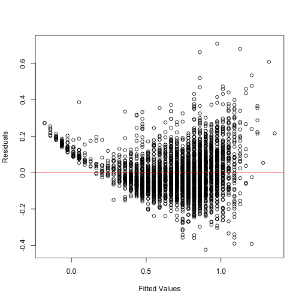

This lesson is intended to help you understand complex objects in R. These are often returned as part of functions the perform a statistical analysis. By the end of this lesson you should be able to exact information from anywhere in an object for use in tables, figures, and other analyses.
This lesson assumes that you are familiar with the basic R objects and data types and that you have a working knowledge of linear regression models.
First load the salamander data from the previous lesson
setwd("/Users/Dan/Documents/Teaching/R_intro/06_Complex_Objects")
library(RCurl)
foo <- getURL("https://raw.github.com/djhocking/R_Intro/master/Data/Salamander_Demographics.csv",
followlocation = TRUE, cainfo = system.file("CurlSSL", "cacert.pem", package = "RCurl"))
demo <- read.table(textConnection(foo), header = TRUE, sep = ",", na.strings = NA)
# str(demo) summary(demo)
Now let's run a simple linear regression on mass as a function of snout-vent length (svl), look at the summary and at the data stored in the output of the lm function.
m1 <- lm(mass ~ svl, data = demo, na.action = na.omit)
summary(m1)
##
## Call:
## lm(formula = mass ~ svl, data = demo, na.action = na.omit)
##
## Residuals:
## Min 1Q Median 3Q Max
## -0.4236 -0.0767 -0.0155 0.0653 0.7085
##
## Coefficients:
## Estimate Std. Error t value Pr(>|t|)
## (Intercept) -0.756416 0.012135 -62.3 <2e-16 ***
## svl 0.038465 0.000314 122.4 <2e-16 ***
## ---
## Signif. codes: 0 '***' 0.001 '**' 0.01 '*' 0.05 '.' 0.1 ' ' 1
##
## Residual standard error: 0.117 on 3375 degrees of freedom
## (5 observations deleted due to missingness)
## Multiple R-squared: 0.816, Adjusted R-squared: 0.816
## F-statistic: 1.5e+04 on 1 and 3375 DF, p-value: <2e-16
m1
##
## Call:
## lm(formula = mass ~ svl, data = demo, na.action = na.omit)
##
## Coefficients:
## (Intercept) svl
## -0.7564 0.0385
str(m1)
## List of 13
## $ coefficients : Named num [1:2] -0.7564 0.0385
## ..- attr(*, "names")= chr [1:2] "(Intercept)" "svl"
## $ residuals : Named num [1:3377] -0.0859 -0.0338 -0.2201 0.0234 -0.0315 ...
## ..- attr(*, "names")= chr [1:3377] "1" "2" "3" "4" ...
## $ effects : Named num [1:3377] -41.1289 14.3441 -0.219 0.0244 -0.0307 ...
## ..- attr(*, "names")= chr [1:3377] "(Intercept)" "svl" "" "" ...
## $ rank : int 2
## $ fitted.values: Named num [1:3377] 0.513 0.667 0.859 0.898 0.975 ...
## ..- attr(*, "names")= chr [1:3377] "1" "2" "3" "4" ...
## $ assign : int [1:2] 0 1
## $ qr :List of 5
## ..$ qr : num [1:3377, 1:2] -58.112 0.0172 0.0172 0.0172 0.0172 ...
## .. ..- attr(*, "dimnames")=List of 2
## .. .. ..$ : chr [1:3377] "1" "2" "3" "4" ...
## .. .. ..$ : chr [1:2] "(Intercept)" "svl"
## .. ..- attr(*, "assign")= int [1:2] 0 1
## ..$ qraux: num [1:2] 1.02 1
## ..$ pivot: int [1:2] 1 2
## ..$ tol : num 1e-07
## ..$ rank : int 2
## ..- attr(*, "class")= chr "qr"
## $ df.residual : int 3375
## $ na.action :Class 'omit' Named int [1:5] 6 9 10 876 1184
## .. ..- attr(*, "names")= chr [1:5] "6" "9" "10" "876" ...
## $ xlevels : Named list()
## $ call : language lm(formula = mass ~ svl, data = demo, na.action = na.omit)
## $ terms :Classes 'terms', 'formula' length 3 mass ~ svl
## .. ..- attr(*, "variables")= language list(mass, svl)
## .. ..- attr(*, "factors")= int [1:2, 1] 0 1
## .. .. ..- attr(*, "dimnames")=List of 2
## .. .. .. ..$ : chr [1:2] "mass" "svl"
## .. .. .. ..$ : chr "svl"
## .. ..- attr(*, "term.labels")= chr "svl"
## .. ..- attr(*, "order")= int 1
## .. ..- attr(*, "intercept")= int 1
## .. ..- attr(*, "response")= int 1
## .. ..- attr(*, ".Environment")=<environment: R_GlobalEnv>
## .. ..- attr(*, "predvars")= language list(mass, svl)
## .. ..- attr(*, "dataClasses")= Named chr [1:2] "numeric" "numeric"
## .. .. ..- attr(*, "names")= chr [1:2] "mass" "svl"
## $ model :'data.frame': 3377 obs. of 2 variables:
## ..$ mass: num [1:3377] 0.427 0.633 0.639 0.921 0.943 ...
## ..$ svl : int [1:3377] 33 37 42 43 45 47 48 32 32 33 ...
## ..- attr(*, "terms")=Classes 'terms', 'formula' length 3 mass ~ svl
## .. .. ..- attr(*, "variables")= language list(mass, svl)
## .. .. ..- attr(*, "factors")= int [1:2, 1] 0 1
## .. .. .. ..- attr(*, "dimnames")=List of 2
## .. .. .. .. ..$ : chr [1:2] "mass" "svl"
## .. .. .. .. ..$ : chr "svl"
## .. .. ..- attr(*, "term.labels")= chr "svl"
## .. .. ..- attr(*, "order")= int 1
## .. .. ..- attr(*, "intercept")= int 1
## .. .. ..- attr(*, "response")= int 1
## .. .. ..- attr(*, ".Environment")=<environment: R_GlobalEnv>
## .. .. ..- attr(*, "predvars")= language list(mass, svl)
## .. .. ..- attr(*, "dataClasses")= Named chr [1:2] "numeric" "numeric"
## .. .. .. ..- attr(*, "names")= chr [1:2] "mass" "svl"
## ..- attr(*, "na.action")=Class 'omit' Named int [1:5] 6 9 10 876 1184
## .. .. ..- attr(*, "names")= chr [1:5] "6" "9" "10" "876" ...
## - attr(*, "class")= chr "lm"
As you'll notice, and remember from the introduction to regression in R, the summary function produces a nice output of the analysis. Running the object just prints some minimal information. The str() function shows everything that is stored in the object, the type class of each part of the object, and the hierarchical arrangement of the information. There is a lot of information in an object returned from just a simple linear regression. It can seem overwhelming at first, but once you learn to read the strucutre output, it you can interpret and extract information from any size object.
First, it tells us that m1 is a list of 13 objects. We know we can extract information from a list using square brackets like m1[1]. This isn't that useful though, because keeping track of the numbers is challenging so instead we'll use the name it gives us for each item.
The first item in the list is "coefficients" and this is a Named number. In this case it returns two numbers -0.7564 and 0.0385, named "(Intercept)" and "svl". The next item in the list are the residuals which is a named number (vector with associated names for each value) of length 3,377. This is correct as there is 1 residual per data point. This is how far each data point is from the mean regression line. In this case, the lm function names names the values "1" through "3377". Also of interest is item 5 in the list $fitted.values. This is the expected value of mass for each value of svl in the dataset according to the regression equation E(mass) = -0.7564 + 0.0385 * svl. These and residuals are often useful for plotting. Remember, one assumption of a linear model is that the residuals are normally distributed around 0 and homogenous (they don't get larger or smaller as expected values get larger). So let's exact this data from the object m1 and plot it.
m1.resid <- m1$residuals
m1.fit <- m1$fitted.values
# Have students come up with how to plot now that data is extracted
plot(m1.fit, m1.resid, xlab = "Fitted Values", ylab = "Residuals")
abline(h = 0, col = "red")

Now what if we want to make a table for a paper similar to that produced by the summary function. We could copy and paste it into a text document or spreadsheet and manipulate it there, but that would be a pain, slow to do multiple times, and is not easily reproducible. The answer is to save the summary output as an object and extract the information from it and write that table out as a specific file.
m1.sum <- summary(m1)
str(m1.sum)
## List of 12
## $ call : language lm(formula = mass ~ svl, data = demo, na.action = na.omit)
## $ terms :Classes 'terms', 'formula' length 3 mass ~ svl
## .. ..- attr(*, "variables")= language list(mass, svl)
## .. ..- attr(*, "factors")= int [1:2, 1] 0 1
## .. .. ..- attr(*, "dimnames")=List of 2
## .. .. .. ..$ : chr [1:2] "mass" "svl"
## .. .. .. ..$ : chr "svl"
## .. ..- attr(*, "term.labels")= chr "svl"
## .. ..- attr(*, "order")= int 1
## .. ..- attr(*, "intercept")= int 1
## .. ..- attr(*, "response")= int 1
## .. ..- attr(*, ".Environment")=<environment: R_GlobalEnv>
## .. ..- attr(*, "predvars")= language list(mass, svl)
## .. ..- attr(*, "dataClasses")= Named chr [1:2] "numeric" "numeric"
## .. .. ..- attr(*, "names")= chr [1:2] "mass" "svl"
## $ residuals : Named num [1:3377] -0.0859 -0.0338 -0.2201 0.0234 -0.0315 ...
## ..- attr(*, "names")= chr [1:3377] "1" "2" "3" "4" ...
## $ coefficients : num [1:2, 1:4] -7.56e-01 3.85e-02 1.21e-02 3.14e-04 -6.23e+01 ...
## ..- attr(*, "dimnames")=List of 2
## .. ..$ : chr [1:2] "(Intercept)" "svl"
## .. ..$ : chr [1:4] "Estimate" "Std. Error" "t value" "Pr(>|t|)"
## $ aliased : Named logi [1:2] FALSE FALSE
## ..- attr(*, "names")= chr [1:2] "(Intercept)" "svl"
## $ sigma : num 0.117
## $ df : int [1:3] 2 3375 2
## $ r.squared : num 0.816
## $ adj.r.squared: num 0.816
## $ fstatistic : Named num [1:3] 14973 1 3375
## ..- attr(*, "names")= chr [1:3] "value" "numdf" "dendf"
## $ cov.unscaled : num [1:2, 1:2] 1.07e-02 -2.74e-04 -2.74e-04 7.19e-06
## ..- attr(*, "dimnames")=List of 2
## .. ..$ : chr [1:2] "(Intercept)" "svl"
## .. ..$ : chr [1:2] "(Intercept)" "svl"
## $ na.action :Class 'omit' Named int [1:5] 6 9 10 876 1184
## .. ..- attr(*, "names")= chr [1:5] "6" "9" "10" "876" ...
## - attr(*, "class")= chr "summary.lm"
m1.sum$coefficients
## Estimate Std. Error t value Pr(>|t|)
## (Intercept) -0.75642 0.0121345 -62.34 0
## svl 0.03847 0.0003144 122.36 0
m1.sum$coefficients["svl", ]
## Estimate Std. Error t value Pr(>|t|)
## 3.847e-02 3.144e-04 1.224e+02 0.000e+00
write.table(m1.sum$coefficients, "Regression-Table.csv", sep = ",")
Hopefully now you feel more comfortable understanding and extracing items from complex objects in R. There will inevitable be parts of object that you don't understand. In those cases, look in the help documents and if all else fails, extract, summarize, and plot those objects and think what they might mean in relation to the function. Eventually you might want to look at the function and see the underlying code to figure out what it's doing, but that's for another day.
xtable - a packge to make easier, prettier tables.
stargazer - possibly the best package for making publication-quality tables in R, especially associated with common analyses like linear regression using the lm function.